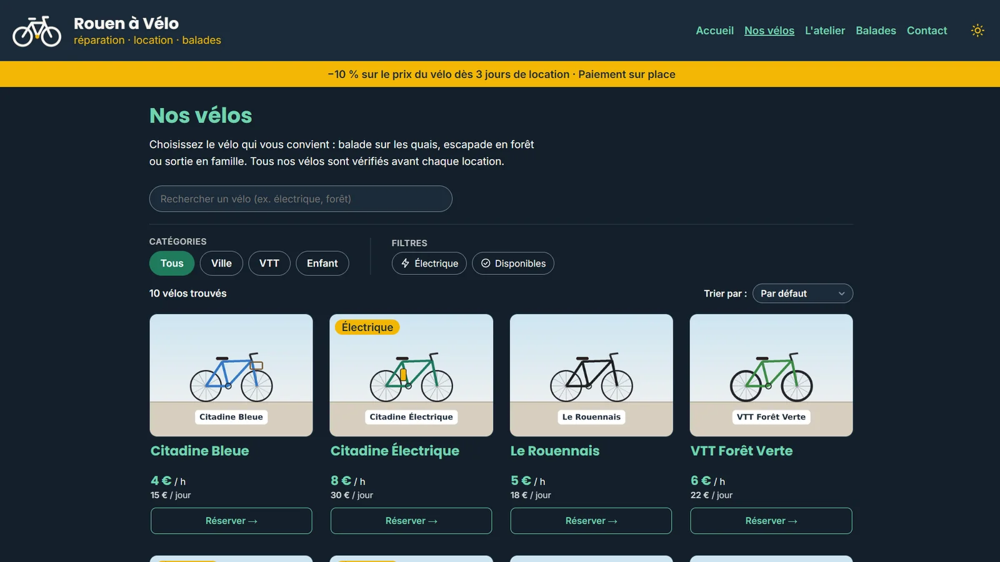
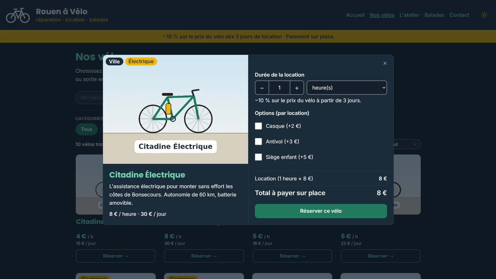
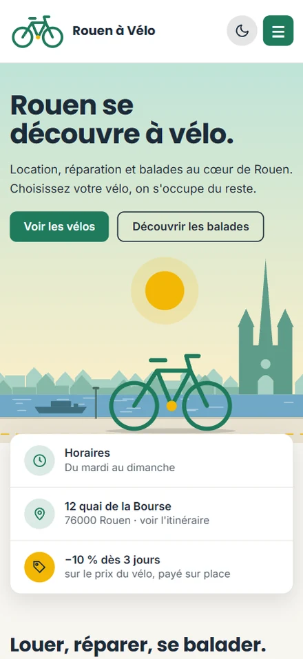
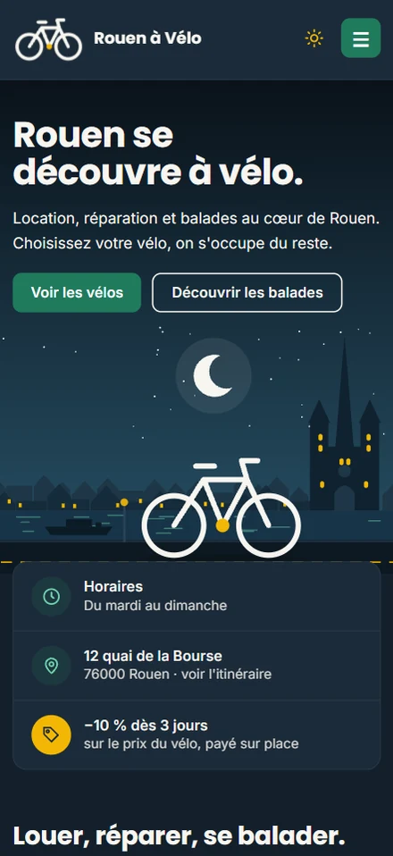
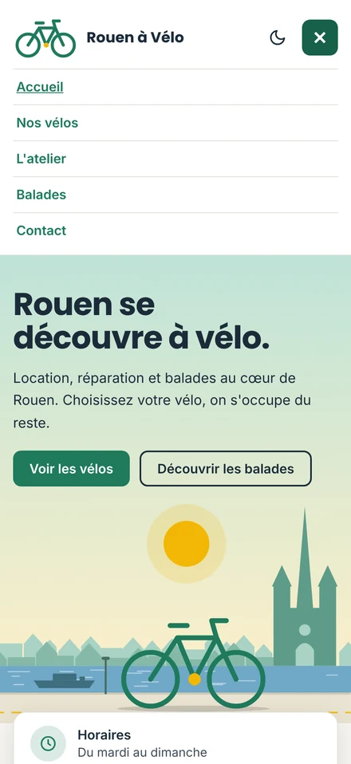
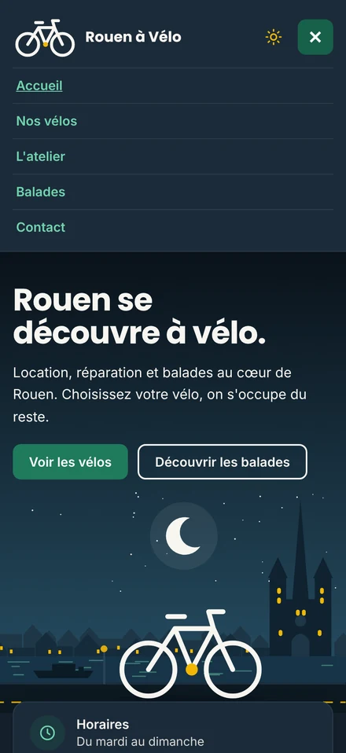
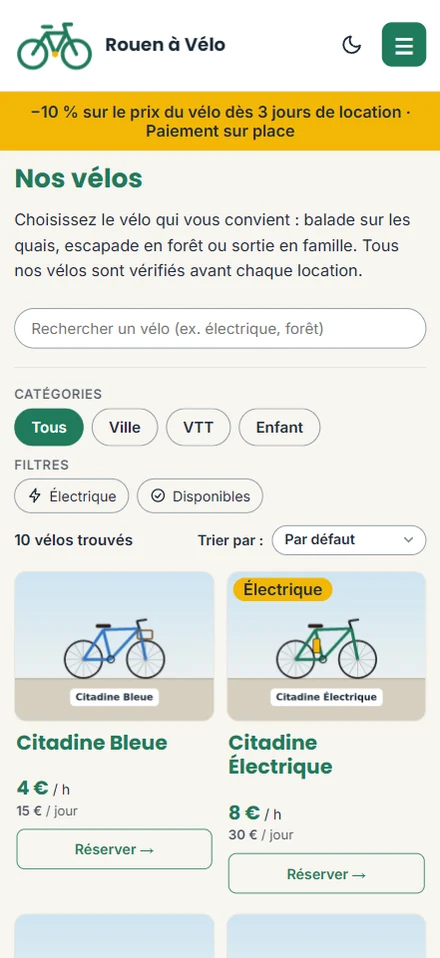

School project · 2026
Rouen à Vélo
A five-page French website for a bike repair and rental workshop in Rouen, built from scratch in plain HTML, CSS and JavaScript, and designed for people on their phones.
- Type
- School project
- Client
- Bike workshop, Rouen (fictional)
- Stack
- HTML, CSS, JavaScript
- Hosting
- GitHub Pages


The brief
A client who was losing customers
Camille repairs and rents bikes on the quai de la Bourse, but she had no website. Customers kept asking the same things: which bikes are free, how much they cost, what the repairs cost, and when the workshop is open. The site had to answer those questions, work well on a small screen, and use only HTML, CSS and JavaScript.
What I built
From a data file to a booking
- 01CatalogueThe 10 bikes are built from the data file, with search that ignores accents, filters and price sorting.
- 02BookingA dialog with hour or day quantity, options (helmet, lock, child seat) and a live total. There is a 10 % discount from 3 days, and it never applies to the options.
- 03Dark modeA button that remembers your choice, and it switches on its own from 19:00 to 07:00. A tiny script sets the theme before the page is drawn, so there is no white flash.
- 04Mobile firstA hamburger menu, two bike cards per row on a phone, and tap-to-call links. Without JavaScript the menu simply stays visible.
- 05ContentRepair prices, the team, an FAQ, six routes, opening hours, a contact form and a map.
How it’s built
Simple by design
Only the bikes page uses data. Every other page is plain HTML, so there is almost nothing to maintain. The whole site runs on five small JavaScript files: one sets the theme, one runs the menu and the dark-mode button, and three handle the bikes page.








